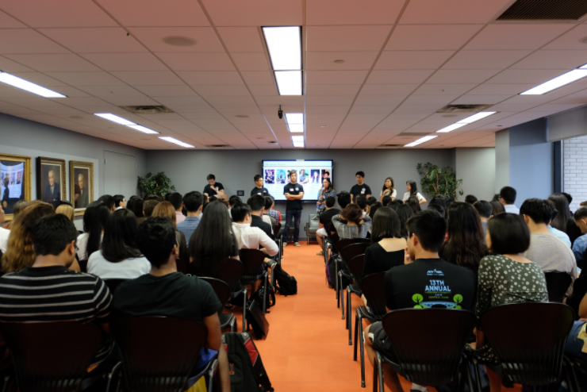
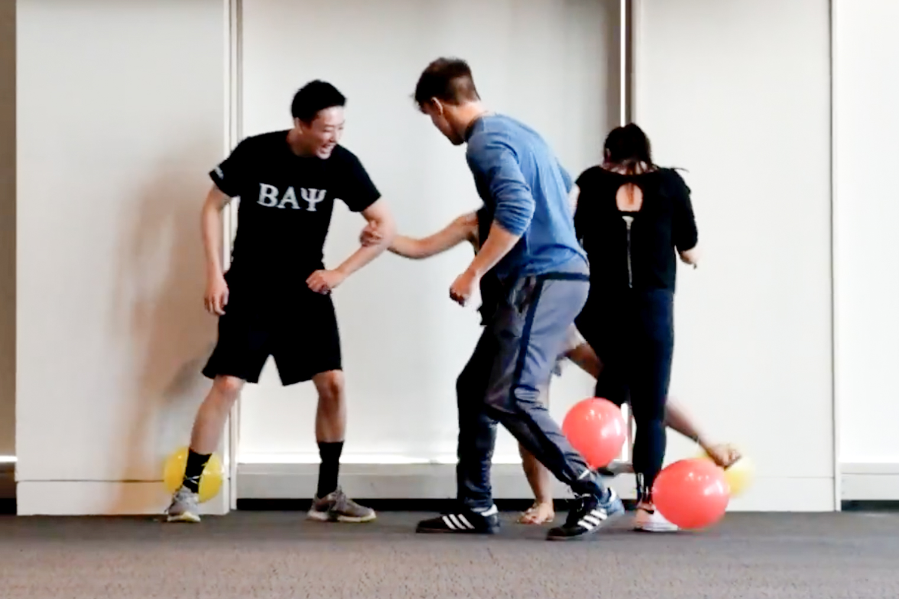

The purpose of the organization is to prepare students to succeed in the professional business environment by providing exposure to key issues in accounting, finance, and information systems. Our members and candidates are provided with the opportunity to mingle with top executives of many firms in a variety of industries as well as to partake in fun and rewarding community service and social activities!

The Mu Chapter's goal is to provide the most current information for our members and candidates with respect to the relevant forces shaping their careers. Obtaining such knowledge makes our members and pledges more marketable and ultimately, a greater value-add to the business world.

The Mu Chapter of Beta Alpha Psi encourages a sense of ethical, moral, and public responsibility. In recognition of the value and rewards of giving back to the community, we are involved in a number of service initiatives. Complementing these professional activities are our Social Events, which include billiards, laser tag, karaoke, and much more!